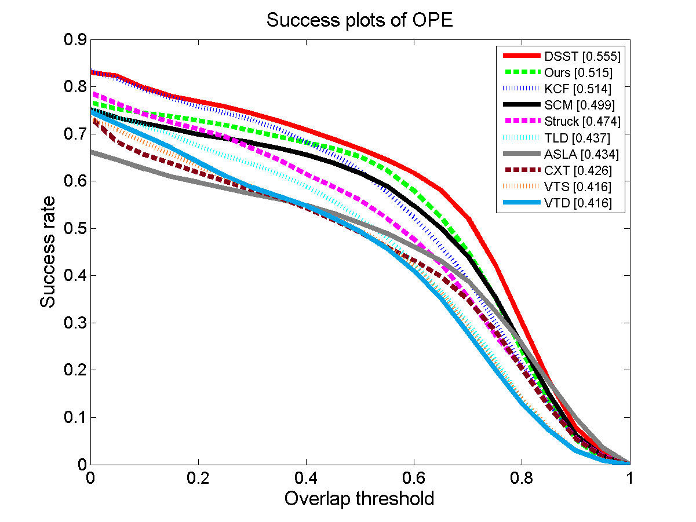
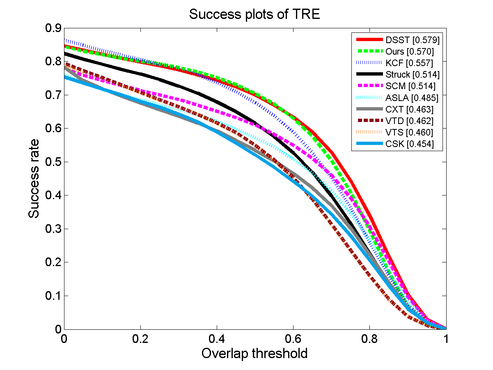
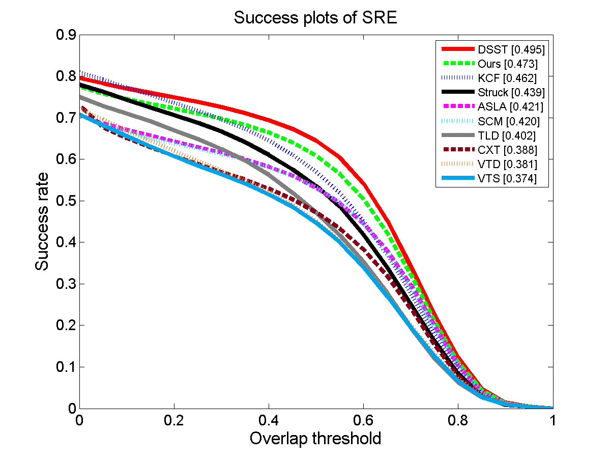

Visual Tracking via Exemplar Regression Model
Ma X, Liu Q, He Z, et al (Knowledge-Based Systems)
Abstract
Visual tracking remains a challenging problem in computer vision due to the intricate variation of target appearances. Some progress made in recent years has revealed that correlation filters, which formulate the tracking process by creating a regressor in the frequency domain, have achieved remarkable experimental results on a large amount of video tracking sequences. On the contrary, building the regressor in the spatial domain directly has been considered as a limited approach since the number of training samples is restricted. And without sufficient training samples, the regressor will have less discriminability. In this paper, we demonstrate that, by giving a very simple positive-negative prior knowledge for the training samples, the performance of the ridge regression model can be improved by a large margin, even better than its frequency domain competitors-the correlation filters, on most challenging sequences. In particular, we build a regressor (or a score function) by learning a linear combination of some selected training samples. The selected samples consist of a large number of negative samples, but a few positive ones. We constrain the combination such that only the coefficients of positive samples are positive, while all coefficients of negative samples are negative. The coefficients are learnt under such a regression setting that makes the outputs fit overlap ratios of the bounding box, where the overlap ratios are measured by calculating the overlaps between the inputs and the estimated position in the last frame. We call this regression exemplar regression because of the novel positive-negative arrangement of the linear combination. In addition, we adopt a non-negative least square approach to solve this regression model. We evaluate our approach on both the standard CVPR2013 benchmark and the 50 selected challenging sequences, which include dozens of state-of-the-art trackers and more than 70 datasets in total. In both of the two experiments, our algorithm achieves a promising performance, which outperforms the state-of-the-art approaches.
Video
Citation
Ma X, Liu Q, He Z, et al. Visual Tracking via Exemplar Regression Model[J]. Knowledge-Based Systems, 2016.
Bibtex
@article{ERT,
title={Visual Tracking via Exemplar Regression Model},
author={Ma, Xiao and Liu, Qiao and He, Zhenyu and Zhang, Xiaofeng and Chen, Wen-Sheng},
journal={Knowledge-Based Systems},
year={2016},
publisher={Elsevier}
}Downloads
CVPR2013 Benchmark results: OPE , SRE , TRE
Video Demo: demo.mp4
Experimental Results on CVPR2013 Bechmark
  